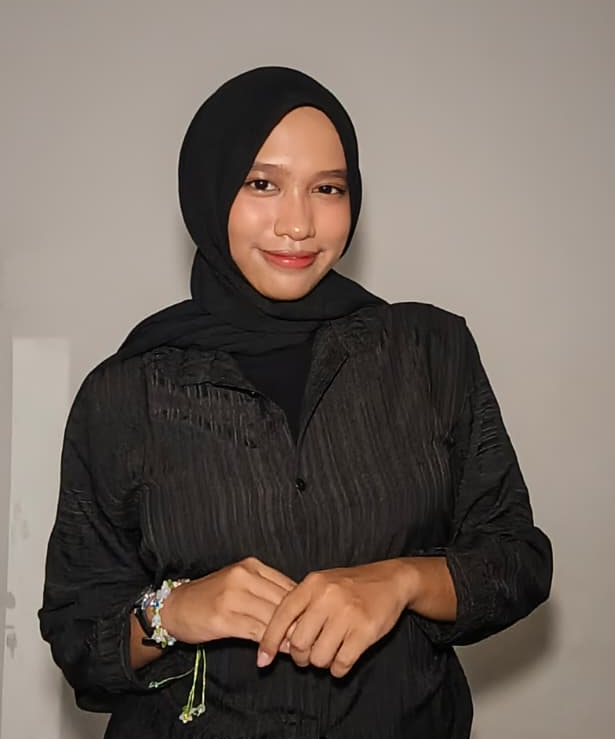

S1 Teknik Informatika - Institut Teknologi Sepuluh Nopember
Agustus 2025 - Sekarang

Memiliki ketertarikan di bidang Teknologi, Seni, dan Sosial serta selalu antusias mengaplikasikan hal baru ke dunia nyata.
Saya adalah mahasiswa program studi Teknik Informatika di Institut Teknologi Sepuluh Nopember (ITS). Saya merupakan pribadi yang suka belajar hal baru, mudah beradaptasi dengan lingkungan, dan memiliki tekad untuk mengaplikasikan ilmu saya ke dunia nyata. Dengan kemampuan manajemen waktu dan berpikir kritis, saya siap memberikan kontribusi maksimal dalam setiap proyek yang saya kerjakan.
Agustus 2025 - Sekarang
Agustus 2024 - September 2025
Mei 2026 | Berkoordinasi dengan vendor dan memastikan kelancaran distribusi konsumsi acara.
Februari 2025 - September 2025 | Terlibat dalam berbagai kepanitiaan seperti HIMTI Cares, HIMTI Berbagi, dan MAKRAB VIESA.
Email: aqillahmaida30@gmail.com
Telepon: call me!